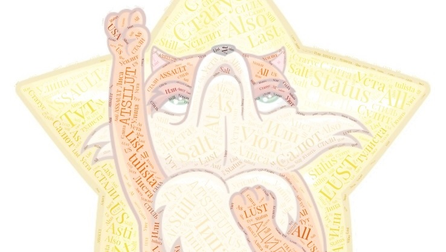

"Подобное мы находим и в книге Зоар, где Рашби велел рабби Аббе, чтобы он записывал тайны, поскольку он умеет раскрывать в скрытии. См. в Идре. Это означает, что там сказано, что на каждую из тайн, которую раскрывал Рашби из секретов мудрости, он плакал и говорил: «Горе, если я скажу и раскрою тайну, горе, если не скажу, и тогда товарищи лишатся этого», «а если скажу, узнают грешники, как служить Господину своему». Другими словами, ему было трудно с обеих сторон – если он не раскроет тайн Торы, эти тайны будут потеряны даже и для настоящих мудрецов, боящихся Творца, а если он раскроет эти тайны, недостойные оступятся на них, так как не поймут этих вещей в их корне и станут есть неспелый плод. Поэтому Рашби выбрал рабби Аббу, чтобы тот записывал, так как он был искусен в составлении аллегорий, – чтобы он выстраивал эти вещи так, чтобы они были целиком и полностью открыты для всех тех, кто достоин их понять, и были бы скрыты и запечатаны для тех, кто не достоин их понять. И потому он сказал, что рабби Абба умеет раскрывать в скрытии. Иными словами, несмотря на то что он раскрывает, оно всё же остается тайным для того, кто недостоин." Йегуда Лейб Алеви Ашлаг (Бааль Сулам). Общее Введение
Бааль Сулам, благословенна память праведника, равно как и вечный Свет его Живой Души в Мире, до Конца исправленном (достаточно тому, кто понимает ;), жил и работал в самые темные времена, о которых говорится в широко распространенном изречении "Тьма сгущается перед Рассветом".
Но Тьма предваряет Рассвет, а не раскрывает и не совершает его. Она его опосредует своим сгущением, создавая этим "объективные и реальные" предпосылки для его истинного раскрытия уже теми нами, кому выпадет доля и честь жить во времена Рассвета, а не во времена наибольшего сгущения Тьмы.
Нисколько не преуменьшая величины постижения глубоких тайн мироздания и неизмеримого по объему и сути вклада Бааля Сулама в эволюцию человеческого Духа (ее невозможно уменьшить уже в силу одного того факта, что если бы не его труд, то не было бы ни автора, пишущего эти строки, ни той наблюдаемой уже сейчас реальности Рассвета, который в наше время уже произошел, происходит и еще будет происходить "объективно и независимо" от чьих либо особо важных мнений по этому поводу), для исключения досадно ошибочного понимания относительно роли, формы и сути той ступени, на которой Бааль Сулам находился при жизни и в процессе работы, и которая оставила серьезный отпечаток и опосредовала суть и форму этой работы, необходимо внести ясность в истинный характер этой ступени относительно сегодняшней реальности, в которой многие из прежних форм "сгущения Тьмы" навсегда оставлены в прошлом, значительной части которого уже сейчас "объективно и независимо", то есть наблюдаемо и проверяемо на реальном личном "опыте постижения духовных миров" находящимися в "постижении" нашими с Вами живыми душами, не только "нет", но и никогда не было, поскольку такова истинная суть происхождения Времени как такового, пусть и непостижимая в значительной степени на нашем сегодняшнем уровне развития онтологического инструментария Келим этого мира, то есть способе понимания сути постижения, времени, восприятия и осознания как таковых человеком, независимо от его уровня развития души, потому что она, независимо ни от чего вообще, является не более (и не менее) чем малой частью общего энерго-информационного эволюционного обще-цивилизационного контекста того времени, в котором эта душа существует, развивается и работает "здесь и сейчас", и существует в тех свойствах, "наследуя" их ограничения и возможности, в которых существует и развивается это общее, без какой либо возможности "сделать кувырок в будущее", которое реально и объективно еще не наступило, более, чем в той мере и том объеме, в которых это будущее этой самой душой формируется "здесь и сейчас" непосредственно формируя предпосылки для его становления, формирования и раскрытия в тех свойствах, которые к самой этой предпосылке не имеют почти никакого сущностного отношения во всех возможных смыслах и ракурсах точки зрения.
Эта роль и функция, которая имелась у Бааля Сулама относительно поколения пишущего эти строки, равно как и роль Вашего покорного слуги, и его функция относительно того поколения, о котором он пишет как о "детях будущего мира", не говоря уже об общем "конце исправления", который является еще более отдаленной ступенью макроэволюции, о которой автору этих строк почти ничего не известно, кроме скупых намеков, частных незначительных деталей и косвенных указаний, получаемых в процессе опыта происхождения с ним того, что в будущем будет включено в его канву становления, опосредуя этот процесс в некотором незнаительном, по меркам итогового состояния и его собственных смыслов, свойств и форм, объеме и степени, в общем и целом может быть охарактеризована как ступень ребенка относительно ступени взрослого, в самом прямом и непосредственном смысле и значении такового определения. Это не функция светоча мудрости, которая освещает Путь всем и на все времена, оттеняя любое новое своим величием и сиянием истины, а нечто противоположное, одновременно с тем, что оно, как и в случае с детьми этого мира, всегда для "взрослых" более важно и значимо, чем имеющееся у них самих полноценное осознание и опытная дееспособность, значительно превышающие "детскую" наивность и простоту, происходящую из того, что тот объем "реального мира", который принимается за объективную действительность без сомнений и возможности критического анализа ребенком, который живет в значительно упрощенной, относительно своего будущего взрослого состояния, модели реальности, которая не пригодна для самостоятельного автономного функционирования без строгого и щепетильного контроля со стороны взрослых, под надзором которых происходит развития ребенка в такого же взрослого и адекватного окружающему миру самодостаточного дееспособного человека, как и они сами.
Зачем я все это пишу? Потому что в определенных узких кругах бытует широко распространенная "байка" о том, что описываемая Баалем Суламом модель человеческого мира, то есть в той части, которая касается непосредственно этого мира и происходящих в нем реальных объективных процессов, понимаемых единообразно каббалистами и всеми остальными людьми, которые в них участвуют, пусть и с очень разных точек зрения на одно и то же, и находясь зачастую с принципиально разных "сторон конфронтологических баррикад", поскольку между ними происходит эволюционное соревнование естественного отбора, так как речь в нашем случае давно уже идет об эволюции разума и сознания, а не о том типе и понимании эволюции, который бытует в повседневном, равно как и в научном, мире и среде современного человеческого общества, является моделью, на которую следует ориентироваться как на соответствующую конечному исправленному будущему состоянию, к которому всем нам предстоит неизбежно придти, независимо от нашего желания, мнения, понимания и принимаемых нами решений или действий, особых мнений и всего прочего.
Это ложь самим себе, это досадный самообман, который был бы досаден в первую очередь Баалю Суламу, будь у него возможность проанализировать сложившуюся атмосферу в среде его "аутентичных учеников", равно как и в среде всего энерго-информационного настоящего "тоналя времени", объективно имеющегося у всех нас одинаково, чьими бы учениками и последователями мы ни были, или не считали себя таковыми. Видение и изложение Бааля Сулама, относительно любых конкретных частных деталей происхождения эволюционного процесса этого мира, то есть, "видимой" глазу объективной реальности повседневного мира, единообразно проявленной через опыт и чувства любой живой человеческой личностью, жизнь которой протекает в данном временном социально-эволюционном контексте "здесь и сейчас", является не более чем "особым мнением" прилежного и талантливого (пусть даже супер-гениального) ребенка о том мире взрослых, частью которого он пока еще не является, поскольку на это есть более чем веские и объективные причины, которые невозможно взять и выкинуть из обозрения, сделав вид, что их нет, а тот, кто о них напоминает, злокозненный фантазер, смутьян и невежественный глупец.
В случае Бааля Сулама, как и в случае Вашего покорного слуги, в отношении реальности Будущего мира, о котором он достаточно много говорит, мечтает и пишет, причина заключается в том, что этот "мир взрослых" не существует в реальности на момент происхождения жизни описывающего и пытающегося "прогностировать" его ребенка, то есть, ребенка относительно самого этого будущего и его реальной ступени, которая еще не наступила, но наступит в будущем, а не относительно "настоящего", в котором этот ребенок - никакой не ребенок а выдающийся (в случае Бааля Сулама), либо же довольно посредственный (в случае Вашего покорного слуги) естествоиспытатель "духовных практик" и знаток практической Каббалы. Это необходимо понимать, принимать и всегда держать перед собой это понимание, одновременно понимая и то, что эти доводы и выводы не действуют в отношении тех явлений и описаний, которые не касаются конкретных форм и свойств этого мира, а которые касаются сути строения мироздания как такового, то есть чисто теоретического аспекта Науки Каббала, который, как и в случае естественных и точных наук этого мира, имеет огромное и несократимое значение и важность в первую очередь для выстраивания успешной практики, какой бы она не была, пусть даже она сама по себе окажется совсем не похожа, по внешней форме и наблюдаемо-выполняемой сути, на конструкции теоретической матчасти, на основе которой она развилась и сформировалась исторически.
Именно поэтому то, на что я хочу обратить Ваше внимание, нисколько не принижает роли и важности неизмеримого вклада в развитие "духовной матчасти" Науки Каббала, равно как и того набора онтологического системного инструментария человеческой цивилизации в общем и целом, в который она входит заметным и несократимым образом, который еще долго будет раскрываться человечеством в будущем, в значительной степени опосредуя и формируя собой это самое будущее, как минимум на этапе его развития и становления, равно как и высоты и уровня постижения, чистоты и дисциплины, имеющихся у совершавшей этот вклад выдающейся исторической личности, чей авторитет в области системного научного духовного знания Каббалы вряд ли когда либо окажется кем либо постигнут, не говоря уже о том, что превзойден, если только этим кем-то не будет тот же Бааль Сулам, реинкарнировавший в новую материальную оболочку живой человеческой личностью этого мира, как он уже делал это не один раз за века развития духовной Науки, и будет делать еще не раз в будущем, как и каждый из нас, только уже в совершенно иных свойствах и неся совершенно новые смыслы и цели своего пребывания в этом мире живым, даже если они внешне будут связаны с теми же самыми явлениями, то есть явлениями, которые наследуют те же самые имена, хронологию исторического происхождения и внешние черты, поскольку обновленный Мир ничем, нисколько и никогда не оказывается похож сущностно на тот Мир, память о котором посредством его обновления имеется лишь в виде сухих листков бумаги, испищренных хитрой вязью символов естественного или искусственного языка самовыражения человека говорящего, из которых каждый отдельно взятый индивид заново создает "объективную реальность", информация о которой, по его мнению, в них содержится, каждый раз, когда они попадают в зону его сознательного внимания и практической деятельности, свято веря в аутентичность объективного происхождения результирующего объема чувственно воспринимаемого осмысленного результата, очевидного в его глазах без тени сомнения и без возможности подвергнуть собственное "опытное знание объективной реальной действительности" критическому анализу в малейшей мере в виду того, что некому будет таковой анализ производить, а будучи произведенным таковой анализ будет означать что угодно, кроме того, что требовалось анализировать.
Чтобы вы понимали, насколько авторы книги Зоар в действительности были "в курсе" того, о чем я пытаюсь здесь сообщить, красноречивое свидетельство этого в форме изложенной в цитате: "Подобное мы находим и в книге Зоар, где Рашби велел рабби Аббе, чтобы он записывал тайны, поскольку он умеет раскрывать в скрытии." ОЛАМ АБА (рабби Абба) - это Будущий Мир. То есть авторы Зоара прекрасно понимали, что смысл, содержание и суть того, что они записывали и сообщали нам, сможет быть раскрыто лишь по мере того, как Будущий Мир будет становится реальностью этого мира "здесь и сейчас", и соответствующие "духовные свойства" будут раскрываться в нем в наблюдаемых и повторяемых формах материи (живого чувственного восприятия практикующими Каббалу), делаясь доступными, желательными, естественными и наблюдаемо достижимыми формами практической деятельности в соответствующих поколениях практиков Каббалы, представители которых в этом будущем мире будут взаимодействовать с материалом данной Книги, извлекая из этого взаимодействия конкретную практическую пользу для формирования их личного, ни на что не похожего, Пути Сердца, и давая абсолютно новые имена, объяснения и описания, тем "духовным явлениям", практическая суть которых от самих авторов Книги Зоар была скрытой еще больше, чем она была скрыта от Бааля Сулама или остается для Вашего покорного слуги, в Силу простых и очевидных причин, природу которых, я скромно надеюсь, смог описать здесь достаточно ясно и доходчиво. А еще именно об этом в Книге Зоар написано (в "Со Мной ты в сотрудничестве") про то, что праведники создают "новые небо и землю" по мере своих занятий Торой, которых вообще никогда не выходило со стороны Создателя. Сделаем и услышим!